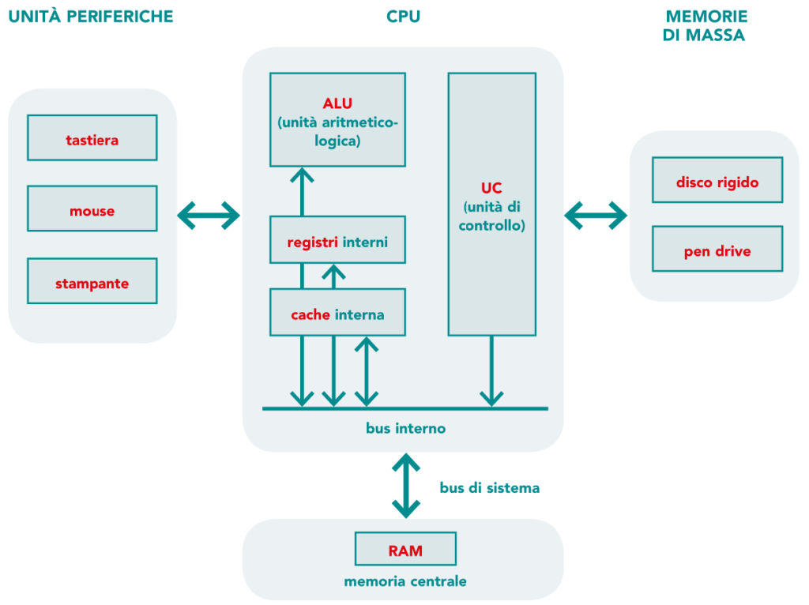
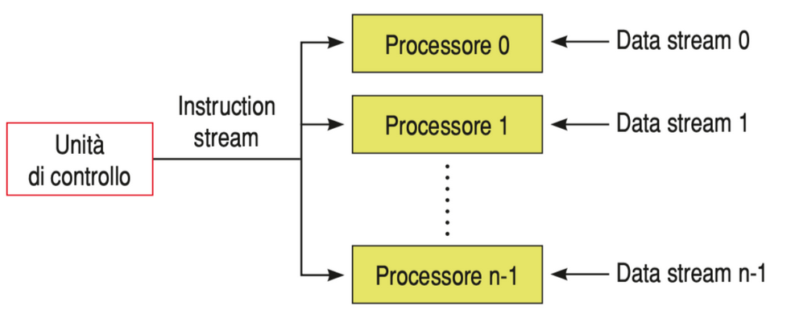
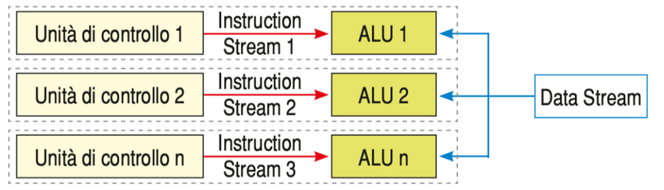

Evoluzione dei sistemi distribuiti
L'evoluzione dei sistemi distribuiti ha coinvolto sia l'hardware che
il software. Per quanto riguarda l'hardware, si è passati dall'uso di
singole CPU a sistemi dotati di più processori, migliorando
notevolmente la capacità di calcolo. La
tassonomia di Flynn (1972) è uno dei principali
modelli per classificare le architetture hardware, basato su due
flussi fondamentali: il flusso delle istruzioni e il flusso dei dati.
Classificazione delle architetture secondo Flynn
La tassonomia di Flynn classifica i sistemi distribuiti in base alla
gestione del flusso delle istruzioni e dei dati:
-
SISD (Single Instruction, Single Data): un unico
processore esegue una singola istruzione su un singolo flusso di dati.
È il modello tradizionale dei sistemi centralizzati.

-
SIMD (Single Instruction, Multiple Data): un unico
processore esegue la stessa istruzione su diversi flussi di dati,
utile in applicazioni come l'elaborazione grafica.

-
MISD (Multiple Instruction, Single Data): più
processori eseguono istruzioni diverse sullo stesso flusso di dati.
Questo modello è meno comune.

-
MIMD (Multiple Instruction, Multiple Data): più
processori eseguono istruzioni diverse su flussi di dati diversi,
permettendo un'elevata flessibilità e parallelismo.
Sistemi MIMD
Nelle architetture MIMD, sia il flusso delle istruzioni
che quello dei dati sono multipli, permettendo a ogni processore di
eseguire le proprie istruzioni su propri dati. Il parallelismo fisico
offre grande flessibilità, poiché ogni CPU evolve in maniera autonoma.
MIMD: multiprocessori e multicomputer
Multiprocessori: In un'architettura multiprocessore,
i processori condividono una memoria comune e collaborano per
l'esecuzione dei compiti. Questa struttura è efficiente per la
comunicazione interna, ma la gestione della memoria condivisa diventa
più complessa con l'aumento dei processori.
Multicomputer: In un'architettura multicomputer, ogni
processore ha la propria memoria locale e comunica con gli altri
processori tramite rete, offrendo una maggiore scalabilità. Tuttavia,
questo modello introduce complessità nella gestione delle comunicazioni
e nella sincronizzazione.
Indietro
Avanti
Copyright © Nessun Copyright 2024